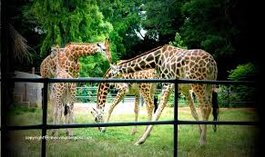

Most Indian cities have good zoos to bank on. With some planning, you can make your trip to the zoo a memorable one. Most zoos would have listed out instructions and policies specific to them. For instance, you would want to know the charge levied on carrying mobiles or cameras and parking vehicles, or if cameras and personal vehicles are even allowed to be taken inside. You’ll also get to know about amenities available within the zoo.
Get your child prepared for the sightings. If you have toddlers at home, you can buy them toy animals before they see them for real. For older children, you can get colouring books or picture books on animals, or even make them watch videos of animal life. Make sure you and your little ones are well rested. You will have a long day ahead and it could be exhausting. If you wish to avoid huge crowds, weekdays are your best bet. The best time to visit is either early in the morning or late in the afternoon when the sun is likely to be less scorching. But, remember to check the timings. You wouldnt want to land at 7 am only to realise the zoo is open for public only at 10! Wear cotton clothing and comfortable footwear. Ensure you have enough water in non plastic containers. Most zoos do not allow visitors to take cooked food inside the premises. Check for specific rules. You may be allowed to take fresh juice and light snacks. Carry sunscreen lotion, hats, umbrellas, sanitiser and a first-aid kit. Keep enough money to pay for carrying mobile phones and cameras, hiring transportation within the zoo (safari rides) or parking your vehicles, buying food, etc. Carry strollers if you visit with a toddler. You may carry your own strollers or find out if the zoo rents them out. Strictly avoid carrying sharp objects, plastic bags and bottles.
If you use personal vehicles inside the zoo (if it is permitted), do not play music. Never feed animals as zoos forbid it. Animals have their own diet and zoo authorities are better suited to take care of it. Do not try any stunts like inserting your hand inside cages or trying to take close-up shots. Maintain a safe distance from animal enclosures. Use binoculars if you wish to take a closer look. Avoid clicking selfies, as you might forget safety precautions while being over-enthusiastic. Pay attention to the children’s needs and moods. Hunger, fatigue or excitement could make children touchy or unmanageable. Be prepared to tackle them. Ensure you and your children wash your hands before you eat. Do not litter the place. Make use of dustbins. Remember not to intimidate animals by mimicking, throwing things, shouting or pulling faces at them. Animals can sense when they are being teased and that could lead to aggressive behaviour from them. Make sure that the family stays together. Do not play games like hide-and-seek or run and catch. Given the expanse of the place, chances of getting lost are high. Also, have the phone number of a zoo official in case you need to contact the authorities because of an emergency. It is a good idea to fix common meeting points in case you get lost in the crowd. While the trip to a zoo is sure to be great fun, you can turn it into a learning experience as well. Consider visiting libraries or information centres within the zoo. Find out if the zoo offers volunteering opportunities for teens and young adults. Your child can avail this during vacations if he or she shows the inclination. So, plan a trip to the zoo at the next possible opportunity and gift your children with memories of a lifetime.
-----------------------------------------------------------------------------------------------------------------------------------------------------------------------------------------------------------------------------------